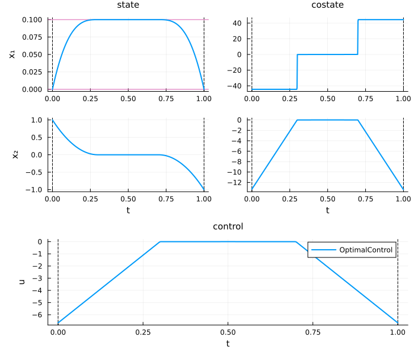
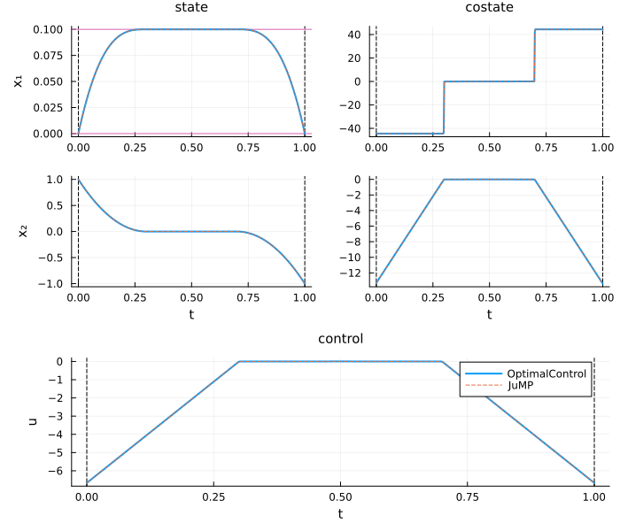

Solve a problem
In this tutorial, we consider the Beam problem. First, import the OptimalControlProblems package to access the problem:
using OptimalControlProblemsSolving from an OptimalControl model
First, import the problem:
using OptimalControl
docp = beam(OptimalControlBackend())
nlp = nlp_model(docp)The nlp model represents the nonlinear programming problem (NLP) obtained after discretising the optimal control problem (OCP). See the Introduction page for details. The model is an ADNLPModels.ADNLPModel, which provides automatic differentiation (AD)-based models that follow the NLPModels.jl API.
We can then solve the problem using, for instance, NLPModelsIpopt.ipopt:
using NLPModelsIpopt
# Solve the model
nlp_sol = NLPModelsIpopt.ipopt(
nlp;
print_level=5,
tol=1e-8,
mu_strategy="adaptive",
)This is Ipopt version 3.14.19, running with linear solver MUMPS 5.8.1.
Number of nonzeros in equality constraint Jacobian...: 4004
Number of nonzeros in inequality constraint Jacobian.: 0
Number of nonzeros in Lagrangian Hessian.............: 501
Total number of variables............................: 1503
variables with only lower bounds: 0
variables with lower and upper bounds: 501
variables with only upper bounds: 0
Total number of equality constraints.................: 1004
Total number of inequality constraints...............: 0
inequality constraints with only lower bounds: 0
inequality constraints with lower and upper bounds: 0
inequality constraints with only upper bounds: 0
iter objective inf_pr inf_du lg(mu) ||d|| lg(rg) alpha_du alpha_pr ls
0 1.0000000e-02 1.10e+00 2.70e-13 0.0 0.00e+00 - 0.00e+00 0.00e+00 0
1 1.2826978e+01 1.10e-02 9.90e-01 -7.3 9.23e+00 - 4.95e-01 9.90e-01h 1
2 1.1464100e+01 1.10e-04 6.29e-02 -2.2 1.05e+00 - 9.96e-01 9.90e-01f 1
3 9.2731943e+00 8.80e-07 5.90e-01 -3.4 1.07e+00 - 9.85e-01 9.92e-01f 1
4 8.9483271e+00 2.39e-07 1.49e+02 -4.5 3.22e-01 - 1.00e+00 7.28e-01f 1
5 8.9058663e+00 1.11e-16 3.41e-13 -4.2 2.36e-01 - 1.00e+00 1.00e+00f 1
6 8.8943940e+00 1.11e-16 5.15e+02 -4.8 1.48e-01 - 6.92e-01 9.74e-01f 1
7 8.8942278e+00 1.11e-16 2.36e+02 -10.5 1.10e-01 - 1.61e-01 3.75e-02f 1
8 8.8920655e+00 1.11e-16 2.87e+02 -5.0 5.93e-02 - 3.84e-01 6.54e-01f 1
9 8.8909518e+00 1.11e-16 1.74e+02 -5.0 4.20e-02 - 5.76e-01 1.00e+00f 1
iter objective inf_pr inf_du lg(mu) ||d|| lg(rg) alpha_du alpha_pr ls
10 8.8901643e+00 1.11e-16 3.27e+02 -5.6 3.50e-02 - 1.00e+00 6.06e-01f 1
11 8.8900465e+00 2.22e-16 3.70e+02 -11.0 6.40e-02 - 4.92e-01 1.31e-01f 1
12 8.8896174e+00 1.11e-16 1.43e+02 -6.9 5.24e-02 - 3.55e-01 5.55e-01f 1
13 8.8895818e+00 1.11e-16 1.93e+02 -11.0 4.26e-02 - 8.94e-01 1.04e-01f 1
14 8.8894085e+00 2.22e-16 8.61e+01 -6.8 3.88e-02 - 1.00e+00 5.36e-01f 1
15 8.8893017e+00 1.11e-16 1.57e-14 -7.2 2.91e-02 - 1.00e+00 1.00e+00f 1
16 8.8892865e+00 1.11e-16 6.61e-15 -8.2 1.09e-02 - 1.00e+00 1.00e+00f 1
17 8.8892827e+00 1.11e-16 6.96e-15 -9.9 5.64e-03 - 1.00e+00 1.00e+00f 1
18 8.8892818e+00 1.11e-16 7.11e-15 -11.0 2.66e-03 - 1.00e+00 1.00e+00f 1
Number of Iterations....: 18
(scaled) (unscaled)
Objective...............: 8.8892818085812557e+00 8.8892818085812557e+00
Dual infeasibility......: 7.1054273576010019e-15 7.1054273576010019e-15
Constraint violation....: 1.1102230246251565e-16 1.1102230246251565e-16
Variable bound violation: 9.9998418573443715e-09 9.9998418573443715e-09
Complementarity.........: 3.8120412953646565e-09 3.8120412953646565e-09
Overall NLP error.......: 3.8120412953646565e-09 3.8120412953646565e-09
Number of objective function evaluations = 19
Number of objective gradient evaluations = 19
Number of equality constraint evaluations = 19
Number of inequality constraint evaluations = 0
Number of equality constraint Jacobian evaluations = 19
Number of inequality constraint Jacobian evaluations = 0
Number of Lagrangian Hessian evaluations = 18
Total seconds in IPOPT = 0.052
EXIT: Optimal Solution Found.To get the number of iterations from the NLP solution:
nlp_sol.iter18and the objective value:
nlp_sol.objective8.889281808581256To recover the state, control, and costate, we recommend building an optimal control solution and using the associated getters (you can also retrieve the number of iterations and the objective value from the OCP solution):
ocp_sol = build_ocp_solution(docp, nlp_sol)
t = time_grid(ocp_sol) # t0, ..., tN = tf
x = state(ocp_sol) # function of time
u = control(ocp_sol) # function of time
p = costate(ocp_sol) # function of time
o = objective(ocp_sol) # scalar objective value
i = iterations(ocp_sol) # number of iteration
tf = t[end]
println("tf = ", tf)
println("x(tf) = ", x(tf))
println("u(tf) = ", u(tf))
println("p(tf) = ", p(tf))
println("objective: ", o)
println("iterations: ", i)tf = 1.0
x(tf) = [-2.5376062445932543e-35, -1.0]
u(tf) = -6.644784581336816
p(tf) = [44.44734595440535, -13.378463854597236]
objective: 8.889281808581256
iterations: 18If the problem includes additional optimisation variables, such as the final time, you can retrieve them with:
v = variable(ocp_sol)From ocp_sol you can also plot the state, control, and costate trajectories. For more details about plotting optimal control problems, see the Plot Manual.
using Plots
plt = plot(ocp_sol; color=1, size=(700, 600), control_style=(label="OptimalControl", ))
Solving from a JuMP model
First, import the JuMP model:
using JuMP
nlp = beam(JuMPBackend())A JuMP Model
├ solver: none
├ objective_sense: MIN_SENSE
│ └ objective_function_type: QuadExpr
├ num_variables: 1503
├ num_constraints: 2006
│ ├ AffExpr in MOI.EqualTo{Float64}: 1004
│ ├ VariableRef in MOI.GreaterThan{Float64}: 501
│ └ VariableRef in MOI.LessThan{Float64}: 501
└ Names registered in the model
└ :N, :control_components, :costate_components, :dc, :dx₁, :dx₂, :state_components, :time_grid, :u, :variable_components, :x₁, :x₂, :Δt, :∂x₁, :∂x₂We can then solve the problem using the JuMP.optimize! function:
using Ipopt
# Set the optimiser
set_optimizer(nlp, Ipopt.Optimizer)
# Set optimiser attributes
set_optimizer_attribute(nlp, "tol", 1e-8)
set_optimizer_attribute(nlp, "mu_strategy", "adaptive")
set_optimizer_attribute(nlp, "linear_solver", "mumps")
# Solve the model
optimize!(nlp)This is Ipopt version 3.14.19, running with linear solver MUMPS 5.8.1.
Number of nonzeros in equality constraint Jacobian...: 4004
Number of nonzeros in inequality constraint Jacobian.: 0
Number of nonzeros in Lagrangian Hessian.............: 501
Total number of variables............................: 1503
variables with only lower bounds: 0
variables with lower and upper bounds: 501
variables with only upper bounds: 0
Total number of equality constraints.................: 1004
Total number of inequality constraints...............: 0
inequality constraints with only lower bounds: 0
inequality constraints with lower and upper bounds: 0
inequality constraints with only upper bounds: 0
iter objective inf_pr inf_du lg(mu) ||d|| lg(rg) alpha_du alpha_pr ls
0 1.0000000e-02 1.10e+00 3.36e-13 0.0 0.00e+00 - 0.00e+00 0.00e+00 0
1 1.2826978e+01 1.10e-02 9.90e-01 -7.3 9.23e+00 - 4.95e-01 9.90e-01h 1
2 1.1464100e+01 1.10e-04 6.29e-02 -2.2 1.05e+00 - 9.96e-01 9.90e-01f 1
3 9.2731943e+00 8.80e-07 5.90e-01 -3.4 1.07e+00 - 9.85e-01 9.92e-01f 1
4 8.9483271e+00 2.39e-07 1.49e+02 -4.5 3.22e-01 - 1.00e+00 7.28e-01f 1
5 8.9058663e+00 9.97e-17 7.96e-13 -4.2 2.36e-01 - 1.00e+00 1.00e+00f 1
6 8.8943940e+00 9.19e-17 5.15e+02 -4.8 1.48e-01 - 6.92e-01 9.74e-01f 1
7 8.8942278e+00 1.59e-16 2.36e+02 -10.5 1.10e-01 - 1.61e-01 3.75e-02f 1
8 8.8920655e+00 1.25e-16 2.87e+02 -5.0 5.93e-02 - 3.84e-01 6.54e-01f 1
9 8.8909518e+00 9.97e-17 1.74e+02 -5.0 4.20e-02 - 5.76e-01 1.00e+00f 1
iter objective inf_pr inf_du lg(mu) ||d|| lg(rg) alpha_du alpha_pr ls
10 8.8901643e+00 1.05e-16 3.27e+02 -5.6 3.50e-02 - 1.00e+00 6.06e-01f 1
11 8.8900465e+00 1.47e-16 3.70e+02 -11.0 6.40e-02 - 4.92e-01 1.31e-01f 1
12 8.8896174e+00 1.06e-16 1.43e+02 -6.9 5.24e-02 - 3.55e-01 5.55e-01f 1
13 8.8895818e+00 1.27e-16 1.93e+02 -11.0 4.26e-02 - 8.94e-01 1.04e-01f 1
14 8.8894085e+00 9.89e-17 8.61e+01 -6.8 3.88e-02 - 1.00e+00 5.36e-01f 1
15 8.8893017e+00 1.01e-16 2.83e-14 -7.2 2.91e-02 - 1.00e+00 1.00e+00f 1
16 8.8892865e+00 9.02e-17 7.11e-15 -8.2 1.09e-02 - 1.00e+00 1.00e+00f 1
17 8.8892827e+00 1.03e-16 7.11e-15 -9.9 5.64e-03 - 1.00e+00 1.00e+00f 1
18 8.8892818e+00 8.85e-17 7.08e-15 -11.0 2.66e-03 - 1.00e+00 1.00e+00f 1
Number of Iterations....: 18
(scaled) (unscaled)
Objective...............: 8.8892818085807725e+00 8.8892818085807725e+00
Dual infeasibility......: 7.0754510535035743e-15 7.0754510535035743e-15
Constraint violation....: 8.8470897274817162e-17 8.8470897274817162e-17
Variable bound violation: 9.9998418573443715e-09 9.9998418573443715e-09
Complementarity.........: 3.8120416028947852e-09 3.8120416028947852e-09
Overall NLP error.......: 3.8120416028947852e-09 3.8120416028947852e-09
Number of objective function evaluations = 19
Number of objective gradient evaluations = 19
Number of equality constraint evaluations = 19
Number of inequality constraint evaluations = 0
Number of equality constraint Jacobian evaluations = 1
Number of inequality constraint Jacobian evaluations = 0
Number of Lagrangian Hessian evaluations = 1
Total seconds in IPOPT = 0.035
EXIT: Optimal Solution Found.To get the number of iterations:
barrier_iterations(nlp)18To get the objective value:
objective_value(nlp)8.889281808580773To get the time grid, state, control, and costate, but also to retrieve the number of iterations and the objective value, OptimalControlProblems provides the following getters:
t = time_grid(nlp) # t0, ..., tN = tf
x = state(nlp) # function of time
u = control(nlp) # function of time
p = costate(nlp) # function of time
o = objective(nlp) # scalar objective value
i = iterations(nlp) # number of iteration
tf = t[end]
println("tf = ", tf)
println("x(tf) = ", x(tf))
println("u(tf) = ", u(tf))
println("p(tf) = ", p(tf))
println("objective: ", o)
println("iterations: ", i)tf = 1.0
x(tf) = [7.346845952328637e-34, -1.0]
u(tf) = -6.644784581337187
p(tf) = [-44.44734595441291, 13.378463854597992]
objective: 8.889281808580773
iterations: 18If the problem includes additional optimisation variables, such as the final time, you can retrieve them with:
v = variable(nlp)Now, we can add the state, costate, and control to the plot:
n = state_dimension(nlp)
m = control_dimension(nlp)
for i in 1:n # state
plot!(plt[i], t, t -> x(t)[i]; color=2, linestyle=:dash, label=:none)
end
for i in 1:n # costate
plot!(plt[n+i], t, t -> -p(t)[i]; color=2, linestyle=:dash, label=:none)
end
for i in 1:m # control
plot!(plt[2n+i], t, t -> u(t)[i]; color=2, linestyle=:dash, label="JuMP")
end